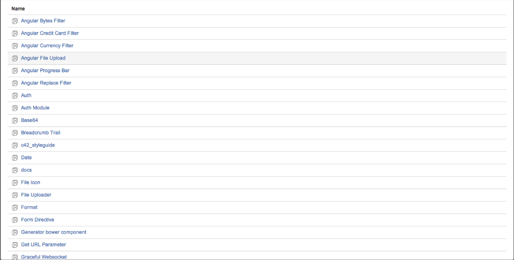

Sharing front-end assets and modules
Current in-house web projects
- Shareplan Web
- Crashplan Console
- Crashplan Console In-app Purchase
- code42.com
- code42.com/crashplan
- code42.com/enterprise-store
- Sales42
- Several others and more to come
Sharing is built in the open source ecosystem
We have our own ecosystem here
Sharing needs to be built into our ecosystem

39 repos extracted to be shared
Things are improving
Room for improvement
- Built in assumptions about load order
- Built in assumptions about framework
- Poor documentation
- Documentation is hard w/out something like gh-pages
- Poor test coverage
- No test automation (need CI server)
- No code linting as part of test automation
- Load order assumptions
- Unknown dependencies
- Peer dependency assumptions
- Inconsistent directory structure
- Inconsistent style
- "Nobody" owns the code
- This "Nobody" jerk is a terrible maintainer
Sources for sharing front-end assets
- npm
- bower
- github/bitbucket/stash repo
- rubygems
- rails-assets
- CDN script tag (haha)
Methods for sharing front-end assets
Modules value propositions
- Well known dependencies
- Well known exports
- Fewer/Zero Globals
- Avoids namespacing
- Shareable pieces of code
- Testable pieces of code
- Necessary for organization of a large codebase
There's a lot of controversy on the topic, (10m searching)
There are several implementations
Sync Modules - CommonJS (browserify, webpack, node)
// example.js
exports.hello = function() {
return 'Hello World'
};
// consumer.js
var example = require('./example.js');
example.hello();
- ↑: very easy to reason about load order
- ↑: easy to understand dependencies
- ↓: requires dependencies to already be loaded
- ↓: requires a specific load order
Async Modules - AMD (RequireJS, Almond, curl.js)
// example.js
define(function(){
return {
hello: function() {
return 'Hello World';
}
};
});
// consumer.js
require(['example'], function(example){
example.hello();
});
- ↑: easy to understand dependencies
- ↑: fine-grained control over code loading
- ↑: has potential to be faster in certain cases
- ↓: definitely harder to reason about
Globals w/namespacing
// example.js
window.example = {
hello: function() {
return 'Hello World';
}
};
// consumer.js
window.example.hello();
- ↑: very easy to reason about
- ↓: hidden dependencies
- ↓: can be clobbered by other third-party libs
- ↓: requires dependencies to already be loaded
- ↓: every module creates a global unless namespaced
ES6 Modules
// jquery.js
// ...
export var $;
System.paths['jquery'] = '//code.jquery.com/jquery-1.10.2.min.js';
System.import('jquery').then(function($) {
// ...
});
Similar upsides and downsides as AMD
Less ceremony around defining the module
ES6 Final Draft slated for 2015
Takeaways
- Using any modules is better than using globals
- Doesn't really affect Angular-only libraries/apps
- Does affect framework agnostic libraries
- Sharing code can be harder than it sounds
- We have to make it as easy as possible to share